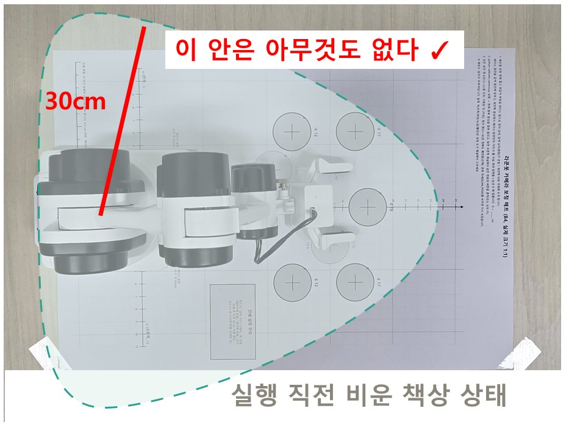
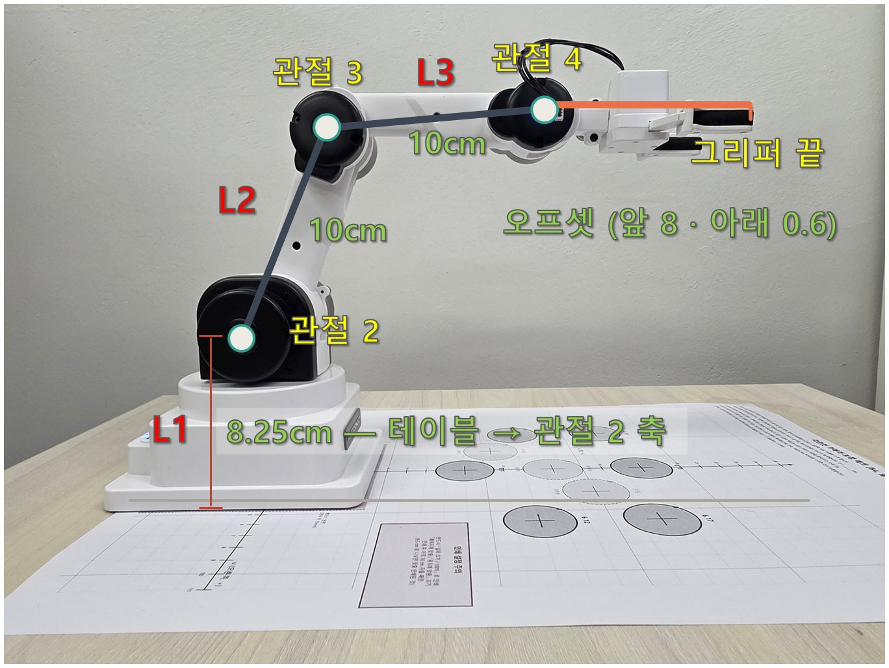
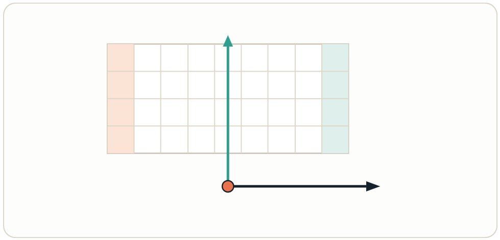
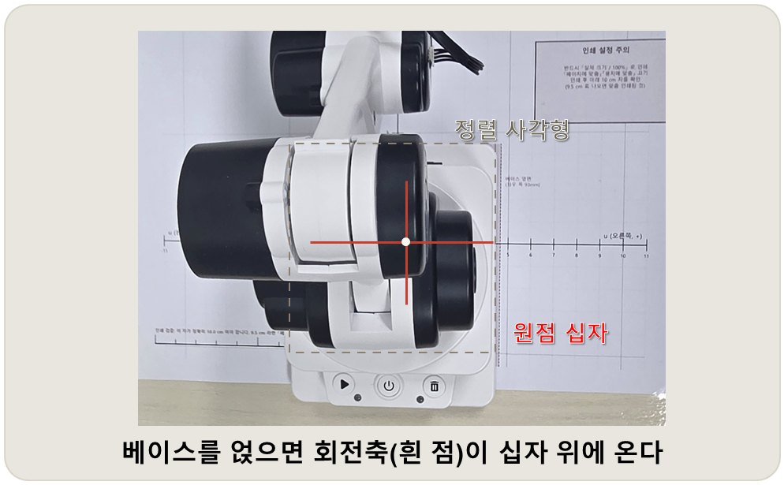

주제 1 · 1차시
로봇팔과 좌표계
안전 · 연결 · 사양 읽기 · 좌표계 정의
실제 구분 차시보다 많은 시간이 소요될 수 있음.
로봇 팔이란? 개념 이해하기
사람의 팔과 유사한 구조로 사람의 팔 역할을 대신 수행하는 로봇을 의미한다.
관절(Joint), 축(Axis)을 구성요소로 사람의 어깨, 팔꿈치, 손목 처럼 여러 개의 관절로 이루어져 있다.
움직일 수 있는 방향(축)의 수에 따라 자유도가 결정되며 엔드 이펙터(End Effector)를 활용하여 실제 물건을 잡고, 들 수 있다.
[출처] 위키피디아 로봇팔

<오늘의 준비물>
- 로보메이션 라쿤봇
- 로봇 동글
- 실
- 무게추
- 작업지도(A3, B4)

프로젝트 로드맵 전체 지도
| 구분 | 주제 |
|---|---|
| 본과정 | 1 좌표계 → 2 순기구학 → 3 작업 공간 → 4 집기 시퀀스 → 5 작업 지도 |
| 자율 탐구 | 영상 처리 → 객체 인식과 모델 평가 — 카메라를 붙여 본다 |
| 자율 탐구 | 손동작 → 음성 — 사람의 손짓과 말을 받아 본다 |
| 프로젝트 | 6 실생활 문제 해결 프로젝트 — 주제 1~5로 우리 팀의 문제를 푼다 |
카메라는 “무엇”을 말하고, 작업 지도는 “어디”를 말한다.
이 프로젝트에서는 카메라로 물체의 위치를 재서 집지 않고 인쇄된 작업 지도에서 로봇팔이 동작하도록 설계한다.
(카메라는 색상, 물체 등의 종류만 판정)
라쿤봇은 카메라가 전제된 장치가 아니고 보정 잔차가 남기 때문이며, 실제 산업 현장도 대부분 지그와 픽스처로 위치를 고정한다.
그래서 “왜 기구학을 손으로 계산하나” 라는 질문에는 이 지도가 답이 된다. 주제 5에서 지도의 좌표를 쓰고 오차를 mm 로 재려면, 그 좌표를 계산할 줄 알아야 한다. 오늘은 그 출발점 — 좌표계를 정의한다.
오늘의 목표와 핵심 질문
<오늘 할 일>
1. 안전 규칙을 세우고 로봇을 연결해 상태 값을 읽는다.
2. 사양서에서 마디 길이와 가동범위를 찾아 좌표계를 정의한다.
3. 로봇의 오류 원인을 분석하고 진단한다.
<오늘 고민해봐야 할 4가지 질문>
Q1. Raccoon() 객체를 만들면 왜 로봇이 저절로 움직이는가?
Q2. 관절 공간과 작업 공간은 무엇이 다른가?
Q3. 이 로봇의 원점은 어디이고 +y는 어느 쪽인가?
Q4. 연결이 안 될 때 무엇부터 확인하는가?
실습 안전 규칙
규칙 1
실행 전 팔 주변 30cm를 비운다
규칙 3
걸려서 소리가 나면 즉시 정지
규칙 4
로봇을 책상 가장자리에 두지 않는다
규칙 5
로봇을 포개어 쌓지 않는다
규칙 2
전원이 켜진 팔을 손으로 밀지 않는다
손으로 잡으려면 turn_off() 를 먼저. 스테퍼 모터는 밀면 탈조한다

물건은 전부 점선 밖에
물병
필통
노트북
로봇을 움직이는 한 줄의 명령어 교사 시범 · 모두 손을 책상 아래로
raccoon = Raccoon()
로봇 구동 모듈 설치하기 : roboid 설치
파이썬에서 모듈(Module)이란 함수, 변수, 클래스 등을 모아 놓은 하나의 파이썬(.py) 파일이다.
다른 파이썬 프로그램에서 불러와(import) 재사용할 수 있도록 만든 코드의 부품 역할을 한다.
# 윈도우키 -> cmd(명령어 프롬프트) 실행 -> 아래 명령어 입력 pip install roboid
[실행 결과 (예시)] Installing collected packages: pyserial, roboid Successfully installed pyserial-3.5 roboid-1.7.11
pip 명령어가 실행되지 않는 경우, 라쿤봇_설치_도우미.bat를 실행해보자.
배터리가 1이면 즉시 교체 · COM 번호는 과정 내내 사용
로봇을 움직이는 명령어 Raccoon() 실습 1
# python 코드 from roboid import * raccoon = Raccoon()
객체를 만들 때 자동으로 실행되는 함수가 있는데, 이것을 생성자라고 한다.
생성자가 호출되는 순간 라이브러리가 Home 자세 명령(0, -10, -140, 60)을 실행한다.
버튼을 누르거나 각도를 준 적이 없는데도, 객체를 만들 때마다 로봇은 초기 자세(0, -10, -140, 60)로 움직인다.
배터리가 1이면 즉시 교체 · COM 번호는 과정 내내 사용
연결하고 상태 읽기 실습 2
from roboid import *
scan() # COM 포트 목록
raccoon = Raccoon() # 연결 + Home 으로 이동
wait(1000)
print("연결 ", raccoon.is_connected())
print("배터리", raccoon.battery_state())
print("신호 ", raccoon.signal_strength())
print("각도 ", raccoon.encoder(-1))
print("좌표 ", raccoon.xyz())
raccoon.beep()
raccoon.dispose()내 로봇의 값은 어떻게 나오는지 확인하고
아래 표를 채워봅시다.
| 읽는 값 | 내 로봇의 값 |
|---|---|
| 배터리 상태 | 3 정상 / 2 중간 / 1 부족 |
| 신호 세기 | dBm, 클수록 강함 |
| 관절 각도 4개 | ___ / ___ / ___ / ___ |
| 그리퍼 끝 좌표 | ___ / ___ / ___ (cm) |
※ 소수점 2자리에서 반올림
연결이 안 돼도 roboid 는 오류를 내지 않는다. 값이 그럴듯하게 나오므로 첫 줄의 연결 여부를 먼저 본다
사양서에서 찾아야 할 숫자 매뉴얼 1장 · 사양

마디 길이 — 주제 2 연계
| 기호 | 값 | 의미 |
|---|---|---|
| L1 | 8.25 cm | 테이블 → 관절 2 축 |
| L2 | 10 cm | 위팔 |
| L3 | 10 cm | 아래팔 |
| 오프셋 | 전방 8 / 아래 0.6 | 손목 축 → 그리퍼 끝 |
가동범위 — 주제 3 연계
| 관절 | 범위 | +방향 |
|---|---|---|
| 1 베이스 | −120° ~ +120° | 반시계 |
| 2 어깨 | −90° ~ +30° | 위 |
| 3 팔꿈치 | −150° ~ 0° | 위 |
| 4 손목 | −105° ~ +105° | 위 |
작업 반경 29.5 cm (그리퍼 포함) · 관절 2의 범위가 비대칭인 이유는?
같은 팔, 두 가지 언어
관절 공간 (joint space)
(0, −10, −140, 60)
작업 공간 (task space)
(0, 14.7, 8.8)
위 두 숫자 묶음은 같은 순간 같은 팔의 자세를 나타낸 것이다.
왼쪽은 모터가 이해하는 언어로, 숫자 네 개가 관절 네 개의 각도이다. 주는 대로 움직이므로 계산이 필요 없다.
오른쪽은 사람이 이해하는 언어로, 숫자 세 개가 손끝의 위치이다.
중요한 것은 로봇은 관절 공간에서만 움직인다는 점이다. 작업 공간은 사람의 편의를 위한 표현이고, 그 사이를 잇는 것이 기구학이다. 각도에서 좌표로 가는 쪽을 순기구학(주제 2), 좌표에서 각도로 돌아오는 쪽을 역기구학이라 한다.
어느 쪽이 더 어려울까요. 순기구학은 각도를 대입하면 답이 하나지만, 역기구학은 답이 없을 수도(도달 불가), 여러 개일 수도(팔꿈치 위/아래) 있다. 그 성질을 주제 3 작업 공간에서 다룬다. move_to() 가 내부에서 하는 일이 바로 역기구학이다.
좌표계 다루기
주제 1
로봇에게 "여기로 가"라고 하려면
'여기'가 어디인지 사람과 로봇이
같은 의미로 해석할 수 있어야 한다.
안전 규칙 30초 복창
battery_state() 확인
좌표계 정의서 — 작업지도로 정하고 검증한다 실습 3
로봇에게 “여기로 가” 라고 말하려면
‘여기’ 가 어디인지 로봇의 언어로 명령을 내려야 한다.
그 명령을 사람의 말로 표현하면 같은 로봇이어도
동작이 제각각이 되고, 맞게 잡았는지 확인할 방법도 없다.
우리는 인쇄된 작업 지도를 통해 눈대중할 것 없이
로봇의 동작 범위와 오차를 파악해보자.
베이스를 매트의 정렬 사각형에 얹으면 회전축이
원점 십자 위에 온다 — 여기가 이 좌표계의 원점이다.

좌표계 정의서 — 작업지도로 정하고 검증한다 실습 3
우리는 인쇄된 작업 지도를 통해 눈대중할 것 없이 로봇의 동작 범위와 오차를 파악해보자.
베이스를 매트의 정렬 사각형에 얹으면 회전축이 원점 십자 위에 온다 — 여기가 좌표 상의 원점


좌표계 정의서 — 작업지도로 정하고 검증한다 실습 3
degree_to(1, 45) 는 관절 1 을 +45° 로 돌리는 명령 : 좌표가 아니라 각도로 동작
(그리퍼를 좌표로 보내는 함수는 move_to)
degree_to(1, 45)를 실행하면 오른쪽? 왼쪽? — 예상을 적고, 실행해서 눈으로 확인한다.
(팔이 움직인 동선과 방향이 매트의 A3용지 안에서 동작하는가?
세부 내용 — 부록 《오차와 한계의 과학》 참고
로봇이 동작하지 않는다면? 왜 안 될까?
동글이 꽂혀 있지 않다
USB 포트를 눈으로 본다
확인 scan() → 목록에 COM 이 보이는가
로봇 전원이 꺼져 있다
스위치와 표시등을 본다 — 1초
확인 signal_strength() → 0 이면 연결 전이다
COM 번호가 틀렸다
scan() 목록과 등록카드를 대조한다
확인 Raccoon(0, 'COM26') → 번호를 직접 넣는다
배터리가 부족하다
battery_state() 가 1 이면 교체한다
확인 battery_state() → 미연결일 때도 2 가 나온다
다른 프로세스가 포트를 점유한다
다른 파이썬 창을 모두 닫고 다시 실행한다
확인 scan() → 포트는 보여도 안 붙는다
진단 목록은 주제마다 한 줄씩 자란다 앞으로의 주제
차시가 진행될 수록 다양한 오류 발생 원인이 존재한다.
| 주제 | 증상 → 조치 |
|---|---|
| 1 좌표계 | 연결이 안 된다 → 동글 → COM 번호 → 포트 점유 → 전원 → 배터리 |
| 2 순기구학 | 계산과 로봇 답이 다르다 → 오차의 모양부터 — 일정하면 상수 누락, 제각각이면 부호·각도 |
| 3 작업 공간 | 명령했는데 안 움직인다 → 관절 한계 초과는 조용히 무시된다, can_move_to 로 확인 |
| 4 집기 | 안 집힌다 → 한 번에 돌리지 말고 걸음별로 멈춰 어느 걸음에서 틀어지는지 짚는다 |
| 5 작업 지도 | 칸마다 일정하게 어긋난다 → 로봇보다 매트 먼저 — 정렬·배율, E2 검증 |
진단 목록은 주제마다 한 줄씩 자란다 앞으로의 주제
차시가 진행될 수록 다양한 오류 발생 원인이 존재한다.
| 주제 | 증상 → 조치 |
|---|---|
| 6 프로젝트 | 원인이 여럿 겹친다 → 위 행들을 순서대로, 확인이 싼 것부터 |
| 영상 처리 | 되던 색을 못 찾는다 → 코드보다 조명 먼저 — HSV 카드의 조건과 대조 |
| 객체 인식 | 엉뚱한 것을 집는다 → 신뢰도를 찍어 본다 — 높아도 틀릴 수 있다 |
| 손동작 | 제스처가 안 먹는다 → 인식 실패의 기본값이 정지인지 확인한다 |
| 음성 | 로봇이 멋대로 움직인다 → 주변 말이 명령이 됐나 — 마이크부터 끈다 |
오늘의 활동 정리 개발 일지(기대 / 실제 / 조치) 작성 → 전원 차단 → 충전기 연결
객체를 만들면 생성자가 자동 실행되어 Home 명령이 실행된다.
진단은 확인 비용이 싼 것부터 순서대로
관절 공간(각도 4) ↔ 작업 공간(좌표 3)
원점 = 베이스 축과 책상이 만나는 점, +y = 정면